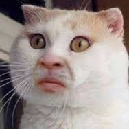
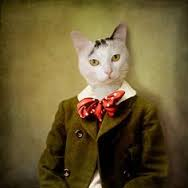
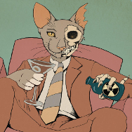
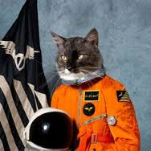

Meet The Team
-

Fred Durst
Face of the Company Cat of all trades, master of humans. Designer/developer /sphinx hybrid in a previous life. Powered by Cheerios and avocados. Patron of contemplation. New York ↔ DC ↔ Catsylvania. -

Cat Stevens
Cat Cantando Chief Bug Barista™, drummer, indoor enthusiast, basset hound lover, beer / wine / whisky / coffee drinker. Husband of Morgana. Tokyo ↔ London ↔ Catzakhstan. -

Catsmo Kramer
"Levels" Designer, illustrator, typographer, visionary. Advocate for fellow felines and catspeople. Jerry's House ↔ Elaine's House ↔ Catstanza's House. -

Neil Pawstrong
In-House Castronaut Contacts are a chance to create fans. I also love sailing, reading, 70s soft rock and drawing occasional cartoons. Melbourne ↔ Wapakoneta ↔ The Moon.
Company History
For centuries, Fred Durst searched for a harmony between the feline species and quantum physics...enter Schrödinger's Box. Fred was so passionate about the idea of placing cats in boxes that he engaged in the experiment himself. After 3 days inside his cardboard asylum, Fred emerged triumphantly, transformed into his first love, truly one with the cats.